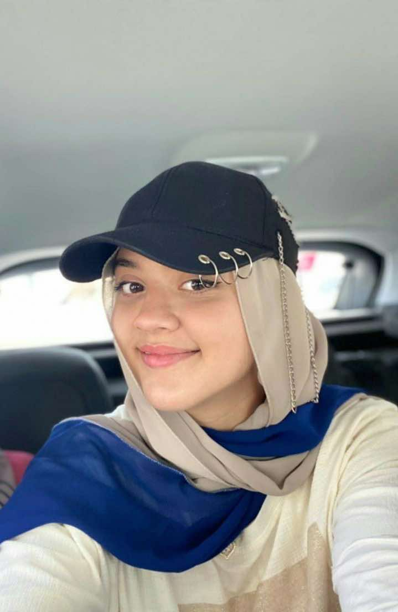
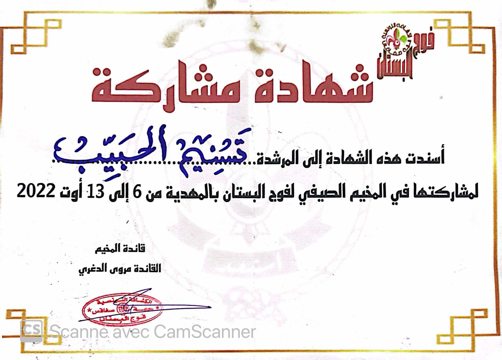

Moi:
Tasnim Hbaieb
Étudiante
Profil
Sérieuse, active, aventureuse, dynamique et autonome
Formation
Licence en Informatique de Gestion
École Supérieure de Commerce-Actuellement-
Baccalauréat-2024-
Lycée Mahmoud Magdich(2020-2024)
Collège 18 Janvier(2018-2020)
École Jawhar puis Besha(2012-2018)
Compétences
- Adaptabilité
- Autonomie
- Créativité
- Polyvalence
Mes Activités Préférées
Voici quelques-unes de mes activités préférées :
Sport
- Marche
- Zumba
- Natation
Arts
- Dessin
- Photographie
Ces activités me permettent d'exprimer ma créativité et de me connecter avec les autres.
Langues
Arabe : Langue maternelle
Français : Courant
Anglais : Courant
Espagnol : Un peu
Mes Certifications

Certification en Quantum Computing

Certification en sciences & leadership

Certification en participation en scout